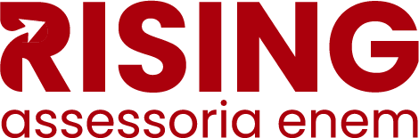
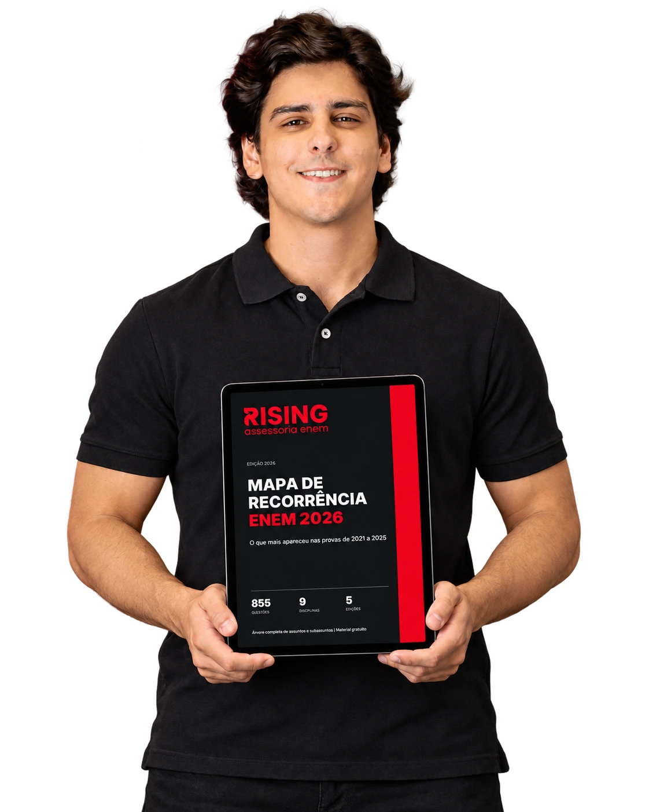
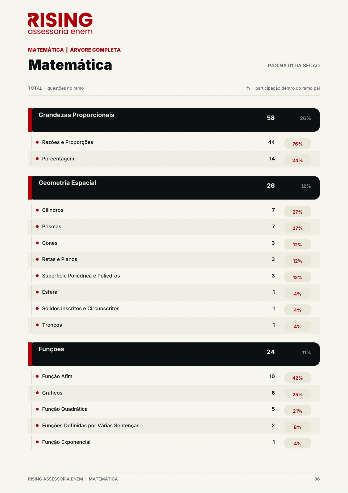
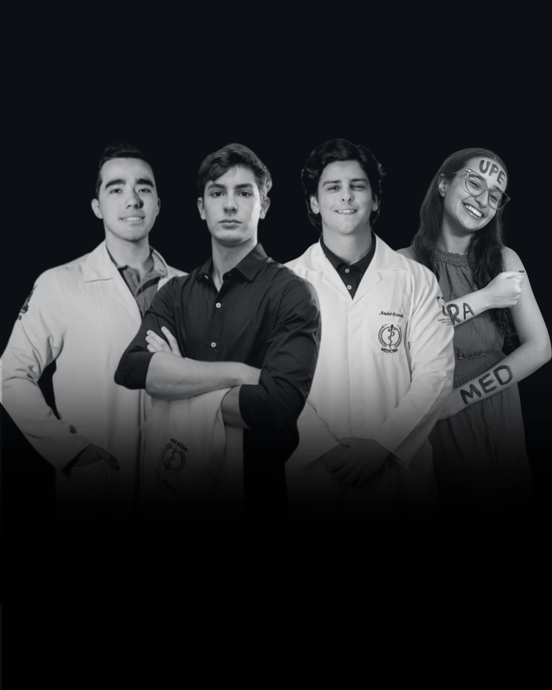

Assessoria individual
Um assessor acompanha sua execução, entende suas dificuldades e ajuda a ajustar seus próximos passos.

Mapa de recorrência · ENEM 2026MAPA DE RECORRÊNCIA · ENEM 2026
Descubra o que mais cai por assunto e subassunto de 2021 a 2025 para priorizar sua revisão.
RECEBER MAPA GRATUITO NO WHATSAPP100% GRATUITOPeça direto no WhatsApp.

Você identificou assuntos que precisam de revisão, mas o tempo é limitado. Então, por onde começar?
Corrija seu simulado e anote os assuntos em que você precisa melhorar.
Agora, procure esses assuntos no MAPA. Explore as páginas abaixo para ver a recorrência e o detalhamento por subassunto.
Comece pelos assuntos que combinam maior dificuldade e maior recorrência. Depois, avance para os próximos.

Role a página para explorar. Toque em ampliar para ler os detalhes.
Matemática · Física · Química · Biologia · História · Geografia · Português · Sociologia · Filosofia
Conheça a RISING

A RISING reúne assessoria individual, planejamento, plataforma de estudos, materiais, questões e suporte em redação para orientar sua preparação para o ENEM.
Você aprende a estudar com uma equipe de aprovados em Medicina na federal, que acompanha sua execução e ajusta o planejamento às suas dificuldades.
Já temos alunos aprovados em Medicina na federal.
Este Mapa é uma parte desse trabalho: transformar informação em direção para seus estudos.
Um assessor acompanha sua execução, entende suas dificuldades e ajuda a ajustar seus próximos passos.
Prioridades de estudo e revisão organizadas de acordo com sua rotina e seu desempenho.
Um lugar para organizar suas metas, registrar os estudos e acompanhar o que foi feito.
Materiais como este MAPA ajudam você a entender o que revisar e a estudar com mais direção.
A prática mostra onde você está errando e dá base para direcionar suas próximas revisões.
Orientação para entender o que precisa melhorar no texto e direcionar sua prática de redação.
Fale com a gente no WhatsApp e peça seu Mapa de Recorrência ENEM 2026.
Um clique para abrir a conversa e pedir o material.